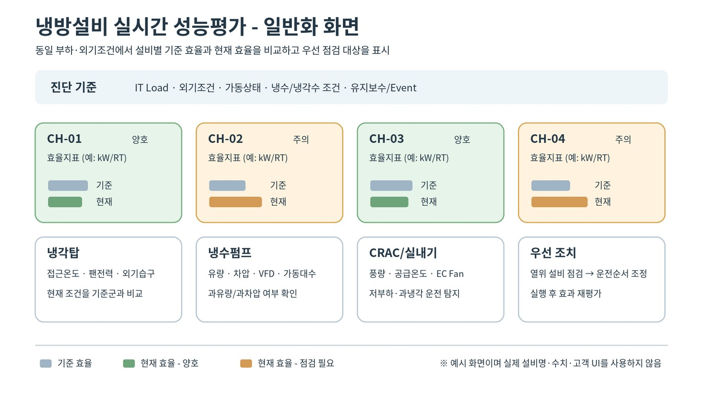

CHAPTER 23 SYNTHESIS
그림 23-3. 냉방설비 실시간 성능평가 일반화 화면. [S11] 원본 제안서의 화면 기능을 바탕으로 설비명·수치·고객 UI·브랜드 요소를 사용하지 않고 출판용 도식으로 재작성. 실제 운영화면의 복제가 아님. ENGINEER’S NOTE | PUE 만으로 성과를 과대평가하지 않는다. N+1, 서버 인 렛 온·습도, 제어모드, 유지보수·Event 를 함께 기록한다. M&V | IT Load 를 기본 조정변수로 두고 외기·운영조건을 반영한다. PUE 1.70/1.65 는 목표·예상효과이며 실제 적용 후 동일 계측경계의 Adjusted Baseline 과 Actual 로 검증한다. CHAPTER 23 SYNTHESIS PUE 는 상위 KPI 이며 원인진단은 냉방·전원·설비별 하위 KPI 로 분해한다. 과냉·가동대수·Set Point·Free Cooling·냉각수 조건을 IT Load 와 함께 분 석한다. 운전변경은 IT 서비스 안정성과 N+1 을 우선 제약으로 둔다. CHAPTER 23 REVIEW 동등 IT Load 와 외기조건에서 PUE 를 비교한다. RT 는 냉동능력 단위로 사용하며 RT/h 로 표기하지 않는다. 목표 PUE 와 실제 검증성과를 구분한다.

인쇄본 기준 p. 103